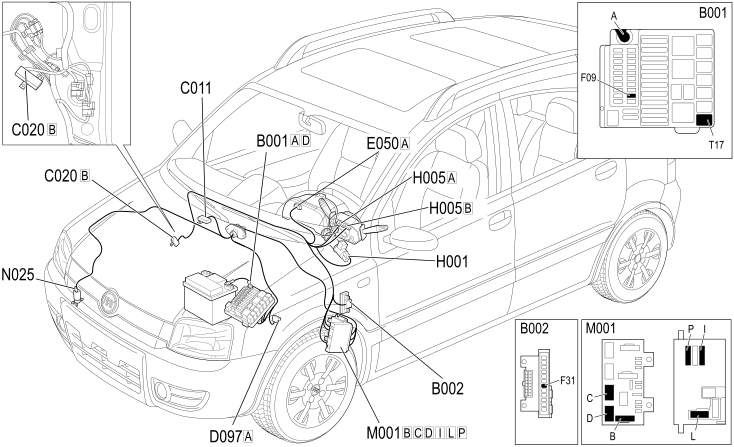

E3022 HEADLAMP WASHER - COMPONENT LOCATION
- Path
- Electrical equipment > 1 ELECTRICAL FUNCTIONS > E30 Electrically activated devices > E3022 HEADLAMP WASHER > E3022 HEADLAMP WASHER - COMPONENT LOCATION
- Kind
- component location drawing
- Applies to
- engines: 1.2 8v; all production periods; only with equipment: 4x4 and POWERED THROTTLE
- Interactive page
- https://sloeber94.github.io/elrnDB-fPnd/en/#/169002354
Applies to: engines: 1.2 8v; all production periods; only with equipment: 4x4 and POWERED THROTTLE
Component location

COMPONENTS
Component code | Description | Reference to the assembly |
|---|---|---|
B1 | Engine compartment junction unit | 5505C |
B2 | Junction unit under dashboard | 5505C |
C11 | Right front earth | - |
C11 | Right front earth | - |
C20 | Passenger dashboard earth | - |
D97 | Short circuit coupling | - |
E50 | Instrument panel | 5560B |
H1 | Ignition switch | 5520A |
H5 | Steering column switch unit | 5550A |
M1 | Body computer | 5505A |
N25 | Headlamp washer pump motor | - |